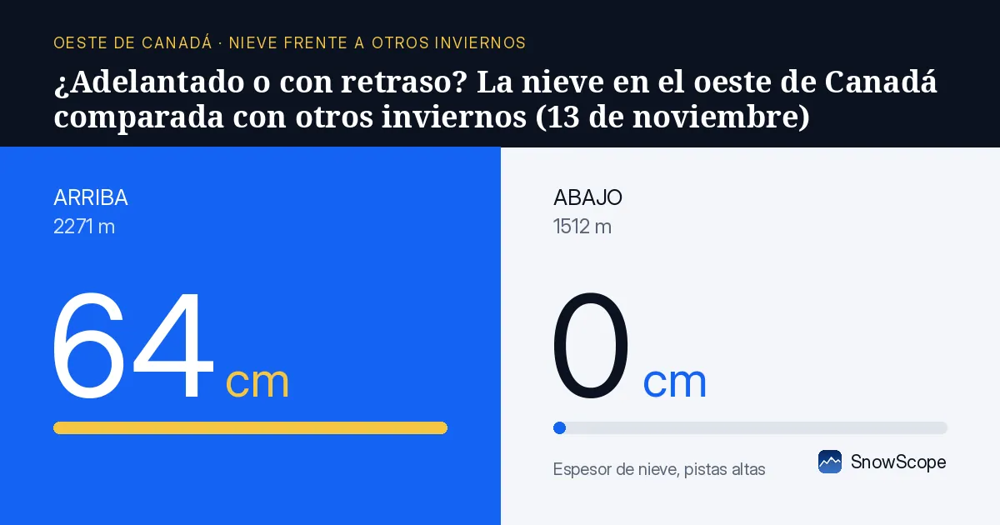
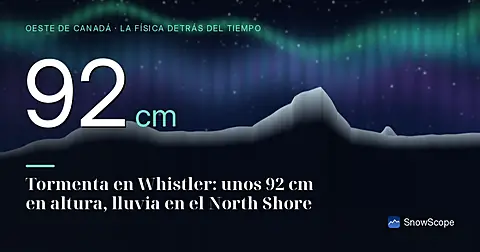

Partes de nieve · Oeste de Canadá
Oeste de Canadá: ¿Se llena la reserva de nieve como de costumbre? Comparamos la nieve de hoy en 5 estaciones en el oeste de Canadá con la misma fecha …
¿Adelantado o con retraso? La nieve en el oeste de Canadá comparada con otros inviernos (13 de noviembre)

¿Se llena la reserva de nieve como de costumbre? Comparamos la nieve de hoy en 5 estaciones en el oeste de Canadá con la misma fecha de cada uno de los 46 inviernos pasados. 1 guardan claramente más nieve de lo normal. La nieve en la montaña es agua guardada para la primavera: lo que cae ahora alimenta después ríos y embalses.
¿Normal, adelantado o con retraso?
A 1891 m en Big White, los 43 cm de hoy superan lo que dio esta fecha en 37 de los 46 inviernos pasados (lo habitual: 30 cm): ya hay una buena cantidad de agua almacenada en la nieve.
La nieve almacena menos agua de lo habitual en Marmot Basin: 20 cm a 2114 m hoy, por debajo de los 79 cm habituales; solo 0 de los 46 inviernos pasados tenían menos el 13 de noviembre.

Whitewater se sitúa en un cuenco constantemente nevado de las Selkirks cerca de Nelson. A media montaña, los picos típicos alcanzan 165 cm. Así es cómo se desarrolla un día de tormenta en una estación de esquí de 670 m de desnivel.

Whistler Blackcomb para cada nivel, con nuestro histórico: unos 370 cm de pico habitual a media montaña en 46 inviernos pasados, marzo y abril los meses más nevados.

Esquiar en Lake Louise a principio de temporada: por qué empieza pronto, cómo suele ser la nieve de noviembre y diciembre en 46 inviernos pasados y cómo esquiar sobre una base todavía fina.

Esquía primero en tu cabeza todo el desnivel de Revelstoke: la nieve en la cima, a media montaña y en la base del valle en 46 inviernos pasados, y cuándo está mejor cada parte.

Banff Sunshine Village mes a mes: unos 100 cm a media montaña en un marzo habitual en 46 inviernos pasados, abril el más nevado arriba y temporada hasta finales de mayo.

Si buscas la mayor cantidad de nieve en el oeste de Canadá hoy, mira Mount Washington Alpine Resort (Canadá): unos 145 cm arriba. Después vienen …

Una tormenta húmeda del Pacífico: 92 cm de nieve nueva en las pistas altas de Whistler del 8 al 10 de noviembre, lluvia por debajo de unos 1.620 m.